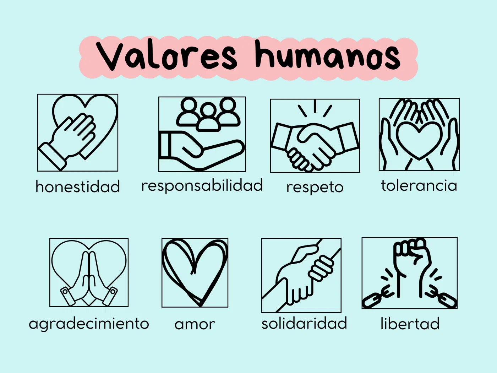
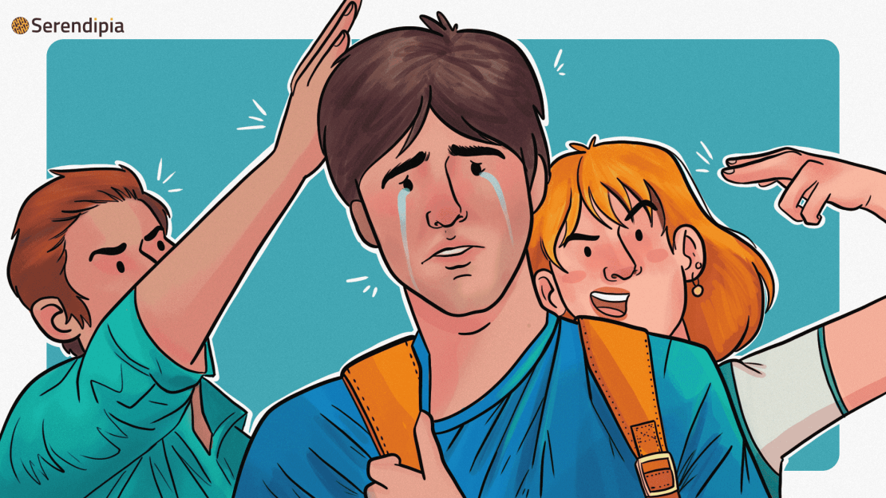
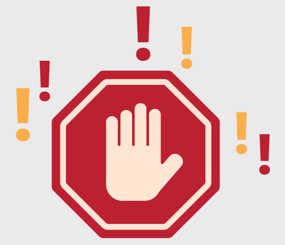

En las ultimas decadas se a generalizado una carencia y desconocimiento de los valores universales.En la sociedad actual es una de las problematicas que tiene su origen en el contexto del hogar y se ve influenciado por la sociedad en donde se desembuelve ¿por que es necesario rescatar y aplicar valores tan basicos como el respeto y la responsablilidad? las faltas de conducta identificadas en las aulas denotan esa caraencia que entorpese el aprendizaje y comportamiento en el aula.Los resultados en trabajo social nos dan un indice en promedio de 100 incidencias os para por diversos temas, en los que destacan: su negacion a aportar el uniforme correctamente, el uso execivo de maquillaje en las alumnas, el cabello suelto y en barones el corte de cabello, falta de materiales didacticos, impuntualidad en clase y ausentismo
SITUACIONES QUE SE CONSIDERAN VIOLENCIA ESCOLAR
INSULTOS:es una accion o exprecion verbal
AGRACIONES: es cuya intencion de hacer daño o herir fisica o verbal
GOLPES:son la acción y efecto de golpear, es decir, el acto de dar un impacto físico a alguien o algo.
BULLYNG:se define como un comportamiento agresivo, no deseado e intencionado, que se repite a lo largo del tiempo y que involucra un desequilibrio de poder real o percibido entre el agresor y la víctima
PALABRAS IRIENTES:son aquellas expresiones verbales o escritas cuyo propósito o efecto es ofender, humillar, menospreciar o causar dolor emocional y psicológico a otra persona
HACIENDO QUE LOS ALUMNOS SEAN MAS RESPETUOSOS TANTO COMO CON EL DOCENTE, ALUMNOS, DIRECTIVO Y PERSONAL DE APOYO QUE SE ELABOREN MAS ACTIVIDADES SOBRE LOS VALORES Y NO A LA VIOLENCIA
QUE HACER EN CASO DE SUFRIR O PRESENCIAR ALGUN ACTO DE VIOLENCIA ESCOLAR
REPORTAR A LAS AUTORIDADES DE LA ESCUELA, QUIEN SE ENCUENTRE MAS CERCA O SI NO SE ENCUENTRA NADIE, TRATAR DE DETENER LA AGRECION Y UTILIZAR EL DIALOGO.
 .